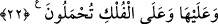

vardır- nefsânî sıfatlar tersi ile şeytânî sıfatlar kanı arasından sıddîkların ruhlarını
suladığı tevhid ve muhabbet gibi saf süt içirir. Nitekim bir şâir şöyle der:
Bana öyle bir şerbet içirdi de gönlümü diriltti
Muhabbet denizinden sevgi bardağıyla
“Onlarda” zikredilenler dışında onların yünlerinde, yapağılarında ve kıllarında “sizin
için birçok faydalar daha vardır;” Kâşifî der ki: “Onlarda sizler için çok faydalar
vardır: Bazılarına binersiniz, bazılarına yük yüklersiniz, bir kısmından yavru alırsınız,
onların yününden ve kılından faydalanırsınız.”
“Etlerinden de yersiniz.” Onlardan meydana gelen şeylerden faydalandığınız gibi
onların bizzat kendilerinden de faydalanırsınız.
Bir hadiste şöyle buyrulmuştur: “Size inek sütünü tavsiye ederim. Çünkü o, her türlü
bitkiden toplanır.”[74] Başka bir hadiste ise şöyle buyrulmuştur:“Size sığır sütlerini ve
yağlarını tavsiye ederim. Sığır etlerinden ise sakının. Çünkü onların sütleri ve
yağları şifa, etleri ise hastalıktır.”[75] Bununla birlikte Rasûlullah (s.a.)’in hanımları
için sığır kestiğine dâir sahih rivayetler vardır.[76]
Halîmî der ki: “Bu durum, hem Hicaz’ın havasının hem de sığır etinin kuru bir
hususiyete sahip olması, sığırın sütünün ve yağının ise rutûbetli olması sebebiyledir.
Sanki Halîmî hadisteki bu hükmün Hicaz’a mahsus olduğu görüşündedir. Bu, güzel bir
îzahtır. Aksi takdirde Hz. Peygamber (a.s.), hastalıklı bir şeyi Allah’a yakınlığa vesîle
(kurban) etmiş olurdu. O, bu sözü ancak sığırdaki kuruluktan dolayı söylemiştir. Bunun
başka bir îzâhı da şöyledir: Rasûlullah (s.a.), sığır eti yemenin câiz olduğunu göstermek
üzere ya da başkalarına kolaylık olması için onu kesmiştir. İmam Sehâvî’nin el-
Makâsıdü’l-hasene adlı kitabında böyle denilmektedir.
22. Onların üzerinde ve gemilerde taşınırsınız.
“Onların” yâni hayvanların “üzerinde ve gemilerde taşınırsınız.” Hayvanların
üzerinde taşınmak, bütün türlerin üzerinde taşınmayı gerektirmez. Deve ve benzerleri
gibi bazılarının üzerinde taşınmakla bu gerçekleşmiş olur. Burada özellikle devenin
kasdedildiği de söylenmiştir. Çünkü Araplar deveye binerler. “Gemi” kelimesine uygun
olan da odur. Çünkü develer, karanın gemileridir.
Karada develer üzerine, suda gemiler üzerine bindirilirsiniz. Yani deve ve gemi sizi
alır, kaldırır bir yerden bir yere götürür.
“__WORD__ (Hûd, 11/40) âyetinde olduğu gibi bu âyette “__WORD__ (geminin içinde)”
buyrulmamıştır. Çünkü gemi hakkında hem içine koyma, hem de üzerine çıkma mânâsı